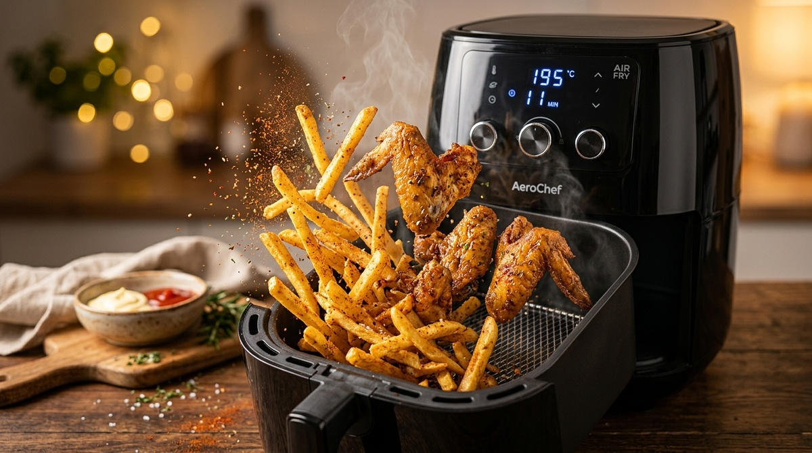
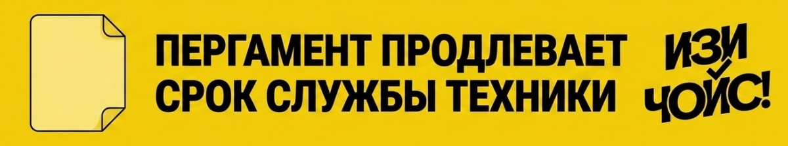

В 2026 году аэрогрили стоят на каждой второй кухне. Реклама обещает нам «жарку без масла», хрустящую корочку за 10 минут и полное замещение духовки. Кажется, что это идеальный гаджет для здоровья и кошелька. Но на территории «ИЗИ ЧОЙС!» мы знаем: там, где много восторгов, обычно прячется много маркетинговой шелухи.

Давайте разберем, стоит ли этот «черный ящик» места на вашей столешнице или он отправится в шкаф к соковыжималке и хлебопечке.
На коробке часто красуется надпись «5 литров» или даже «8 литров». Это создает ложное ощущение, что внутри можно приготовить ужин на всю семью. Однако аэрогриль работает по принципу конвекции: мощный поток горячего воздуха должен свободно обдувать каждый кусочек.
Например, если заполнить чашу картошкой до самого верха, результат будет плачевным: верхний слой сгорит под раскаленным ТЭНом, а нижний останется сырым и вареным. Реальный рабочий объем аэрогриля — это один слой продуктов. Все, что лежит друг на друге, готовится медленнее и хуже.
Слоган «Ноль капель жира» — главный козырь маркетологов. Но физику не обмануть: без капли масла мясо быстро высохнет, а овощи превратятся в сухой картон.
Практика показывает, что полностью сухое приготовление лишает еду вкуса. Использование специального распылителя для масла решает проблему: всего 2–3 грамма жира создадут ту самую золотистую корочку, которая удержит сок внутри. Это в десятки раз меньше, чем при обычной жарке на сковороде, но вкус при этом остается «ресторанным».
Главное преимущество аэрогриля перед духовкой не в скорости самого приготовления, а в отсутствии этапа разогрева. Духовке нужно 15–20 минут, чтобы выйти на нужную температуру. Аэрогриль готов к работе через 30 секунд после включения.
Например, если вам нужно приготовить 10 куриных крылышек, в аэрогриле они будут готовы через 15 минут с момента нажатия кнопки. В духовке за это время вы только закончите её прогревать. Это делает гаджет идеальным инструментом для быстрых завтраков или перекусов после работы.
В рекламе чаша аэрогриля всегда блестит. В реальности жир и панировка пригорают к решетке под воздействием мощного обдува. Отмывать антипригарное покрытие после каждого использования — сомнительное удовольствие, которое быстро отбивает желание готовить.

Решение ситуации крайне простое: использование обычного пергамента для выпечки или специальных силиконовых форм. Если застелить дно бумагой, весь жир останется на ней, а саму чашу достаточно будет просто сполоснуть.
Аэрогриль — это не замена полноценной кухне, а великолепный ускоритель для простых блюд.
Делайте свой ИЗИ ЧОЙС! 💡 Пусть техника работает на вас, а не вы на неё.